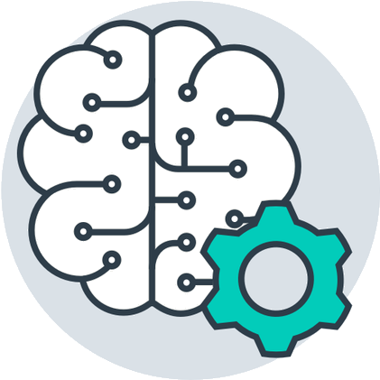

Machine Learning

What does it do?
Machine learning is a sub-branch of artificial intelligence. It is also one of the most important technologies changing the world today.
The definition of machine learning is developing systems that learn and improve themselves by reading a significant amount of data and training them with data sets.
The goal in machine learning is to enable the computers to learn without programming them specifically. (Rebala, Ravi & Churiwala 2019)
Although there are multiple methods like supervised, unsupervised, semi-supervised and reinforcement machine learning algorithms in machine learning,
it is desired that machines will be able to learn themselves without needing human assistance. (Rebala, Ravi & Churiwala 2019)
Currently, machine learning is being used in our mobile phones by major phone companies. Siri, Alexa and Google now are the samples of personal
assistant which use machine learning to collect and refine the previous enquiries by the user to be able to use them for future tasks.
Then they use this to dig result for the user enquiries. (Marr & Ward 2019)
GPS applications are another example of the current usage of machine learning. While we are using the GPS, the collected data will be used to make
predictions for traffic conditions, congestions etc.
In addition, there are various online streaming tools are operating based on machine learning. For example,
Netflix and Spotify are using the previously watched and previously listened contents to suggest new movies or songs to their users.
Moreover, search engines are also using machine learning to refine their result based on the overall time spent on a specific result by the user.
The software assumes that, if the user spends more time on any given search result, the result seems more likely to be related to the query.
There are also several other usages machine learning is being used, such as email & spam filtering, online customer support, product recommendation,
online fraud detections, social medical services, video surveillance, stock trading etc. (Marr & Ward 2019)
Machine learning became possible after being able to access a huge amount of data in various fields. In addition, computer capabilities are also increased to enable them to handle a large amount of data to make machine learning possible today.
What is the likely impact?

Machine learning is likely to cause the automation of many jobs. (Arntz, Gregory & Zierahn 2016) This has many implications, from a lowered amount of jobs alongside an increase of productivity. Data can be processed by computers faster than humans (Rebala, Ravi & Churiwala 2019), and with the proper algorithms, decisions can be made more efficiently and effectively than humans, as well. This means that many areas which were previously handled by humans, such as accounting, law, and diagnostic medicine, may be done by computers in the future.
For example, whereas a doctor must personally memorise all the diseases that may be caused by symptoms, and personally weigh the chances of one disease over another, a machine-learning-based artificial intelligence doctor could have access to an up-to-date and comprehensive database at all times, and make statistically accurate predictions. A human doctor, subject to ordinary human pattern recognition, may have induction biases due to personal experience, whereas an artificial intelligence doctor would always make the decision in a vacuum.
Similar examples can be found in accounting and law, wherein a machine-learning-based artificial intelligence can be used to cover all applicable rules and regulations (and in the case of law, find precedent) significantly faster than any human possibly could. They could then give judgements based on which of that data is likely to apply.
In this way, the money that has been otherwise paid for those businesses will be focused on either the owners and operators of the infrastructure (servers, computers, and administration), or those with the license to those AI as programs (intellectual property models). Conversely, if such an approach becomes widespread, the number of people, and indeed the percentage of people, who have access to competent services of those types will logically increase, as the ease of increased supply will cause the restrictions to access to decrease.
How will this affect you?
In this author's opinion, automation of data processing is, overall, a good thing. However, it could see the already oversaturated job market have a lot of jobs, that can currently only be done by people, become unavailable to them.
If, hypothetically, all production jobs are done by robots (Nee 2015), and all data- and information-based jobs are done by machine-learning-based artificial intelligence, then there will be no jobs, or at least very few jobs, that are left for humans. In particular, capitalists (i.e. those who own and operate the AIs for profit) and artists, will likely be available as human-only jobs for some time. The majority of people are not capitalists or artists.
If so, then this author believes that the only way forward is with an economic model that does not require every citizen to have gainful employment. Otherwise, people will starve for the lack of jobs, and then there will be no end-consumers for money to have meaning any more.
However, with such a model discounted, automation means a higher quality and standard of living for everyone, including better medicine, physically safer day-to-day life, and even better, stronger infrastructure, more resilient to decay and the elements.
As this author is not yet a business owner, and has no as-yet discovered artistic talent, the impact on his life is entirely dependent on the societal changes that arise from the implications of machine learning. Will he be replaced in any job he has, starving in poverty while the economy collapses? Or will he be living in comparative luxury, while pursuing his own social, personal, and intellectual interests? There is insufficient data at this time to make such a determination.